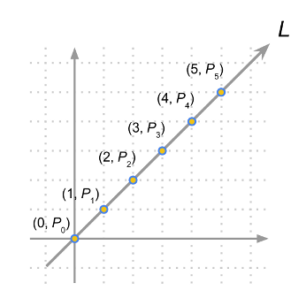
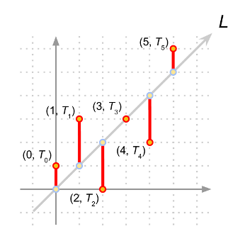
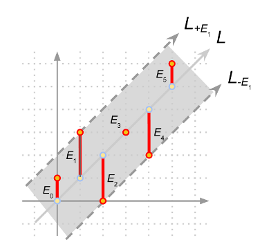
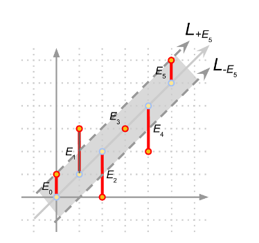
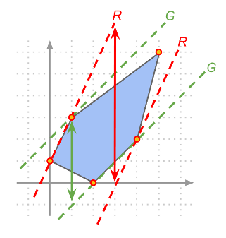

This problem can be viewed as a modified version of finding the minimum width of a convex hull [1] which can be solved using a modified version of the rotating calipers technique [2,3]. We present below the intuition on why the problem is similar to finding the modified minimum width of the convex hull.
First off, we can plot the sequence of drum strikes as (i, Ti )on the 2-dimensional plane. If the drummer performs perfectly, then let's call the sequence Pi and (i, Pi) falls on the same line L (see Figure 1 and Figure 2).

Figure 1

Figure 2
Unfortunately the drummer does not perform perfectly and has error Ei (which is |Ti - Pi|) (see Figure 3).

Figure 3
So in the example in Figure 3, we have our line L, and it is clear that our answer is the maximum among all Ei, which in this case is E1 (or E2 or E4). If we draw two lines parallel to L shifted in the y-axis by +E1 and -E1, denoted as L+E1 and L-E1 (see Figure 3), you will notice that the region between the two lines contains all the points (i, Ti); this example fits the definition of the problem which is a drum rhythm where each strike differs by at most E from some perfect rhythm. On the other hand, if we choose E5 as the error candidate, the region between the two lines L+E5 and L-E5 will not contain all the points (i, Ti) (see Figure 4).

Figure 4
In essence, we want to find a line denoting the perfect rhythm and two parallel lines that are shifted in the y-axis by +E and -E such that the two parallel lines contain all the points (i, Ti) and also that E is the minimum possible value. We would like to point out that instead of trying to find the line with the perfect rhythm which can be a hard problem due to the error associated with each (i, Ti), we can instead focus on the equivalent problem of finding the two parallel lines. Note that each of these two lines must touch at least one point otherwise we can always reduce the distance between these two lines, and further reduce the distance on y-axis to get a smaller error E.
In fact, all candidate parallel lines touch (without intersecting) the convex hull of the points (i, Ti). Therefore we transform the problem to finding the minimum distance between two parallel lines in y-axis touching (without intersecting) the convex hull. For example, the convex hull of the points in Figure 2 are shown in Figure 5.

Figure 5
Therefore to solve this problem, we first compute the convex hull of the points (i, Ti). Then we go through all the line segments on the boundary of the convex hull and find the corresponding parallel line on the opposite side of the convex hull (see Figure 5 for some examples), then get the y-distance between these two parallel lines, and report the minimum among all such y-distances.